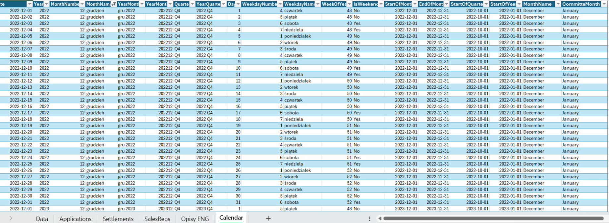
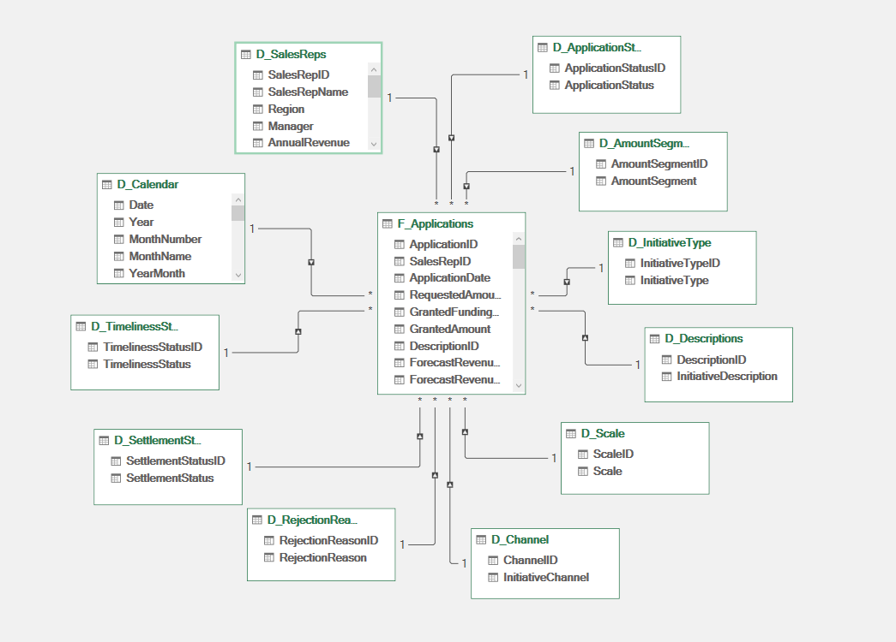
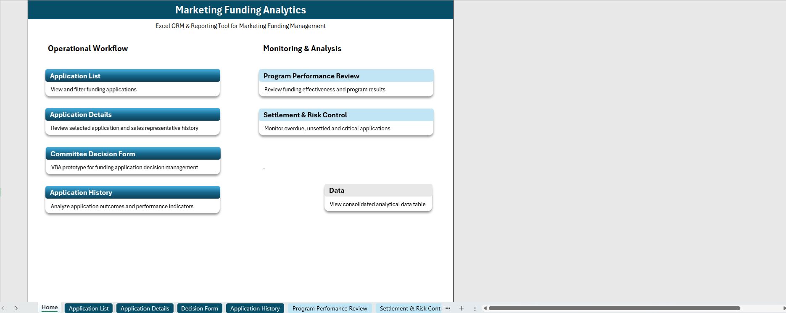
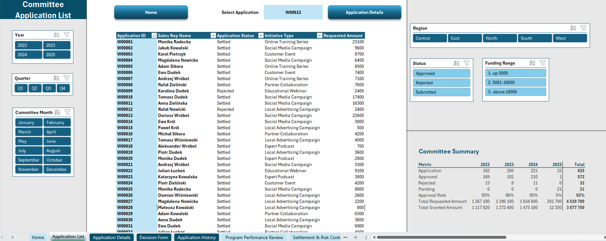
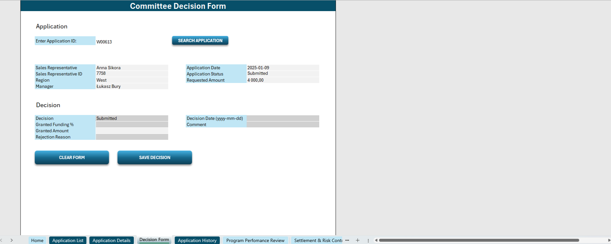

CRM i dashboard komisji ds. dofinansowań marketingowych
ExcelPower QueryPower PivotVBAKPI
Excelowy system operacyjno-analityczny wspierający ocenę wniosków o dofinansowanie działań marketingowych, kontrolę rozliczeń oraz analizę efektywności programu. Projekt łączy przygotowanie syntetycznej bazy danych, Power Query, model danych, dashboardy KPI, aktywną nawigację między arkuszami oraz formularz VBA do obsługi decyzji komisji.
Dane przedstawiają stan na 1 lutego 2025 roku i obejmują pełne lata 2022–2024 oraz wnioski ze stycznia 2025 roku. Wnioski styczniowe znajdują się na etapie rozpatrywania przez komisję. W wersji demonstracyjnej pokazano również, jak formularz VBA zapisuje decyzję dla wybranego wniosku i aktualizuje dane w głównej bazie.
Narzędzia: Excel, Power Query, Power Pivot, VBA, tabele przestawne, formuły, formatowanie warunkowe, dashboard design.
1Problem i cel projektu
W organizacji posiadającej sieć sprzedaży lub partnerów biznesowych proces przyznawania dofinansowań marketingowych może obejmować wiele wniosków, różnych przedstawicieli, regionów, typów akcji i budżetów. Sama decyzja o przyznaniu środków nie wystarcza — ważne jest również późniejsze rozliczenie akcji i ocena, czy dofinansowanie przyniosło oczekiwany efekt biznesowy.
Głównym problemem biznesowym był brak jednego narzędzia, które pozwalałoby komisji oraz osobom nadzorującym program dofinansowań kompleksowo obsługiwać proces: od przeglądu wniosków, przez ocenę historii przedstawiciela, po kontrolę rozliczeń i analizę efektywności programu.
Takie narzędzie powinno umożliwiać:
przeglądanie i filtrowanie wniosków,
sprawdzanie historii przedstawiciela przed podjęciem decyzji,
Celem projektu było stworzenie skoroszytu Excel, który nie jest wyłącznie statycznym raportem, ale pełni funkcję prostego narzędzia operacyjnego dla komisji i osób nadzorujących program dofinansowań.
Dashboardy zostały przygotowane z myślą o pracy na dużym ekranie jako stanowisko robocze. Dzięki temu użytkownik może jednocześnie widzieć najważniejsze KPI, tabele, slicery, listy wniosków i szczegóły analityczne.
2Dane
Dane zostały przygotowane przeze mnie specjalnie na potrzeby projektu portfolio. Są to dane fikcyjne, inspirowane realnym procesem biznesowym. Wszelka zbieżność danych osobowych, wartości lub sytuacji biznesowych jest przypadkowa.
Zbiór został zaprojektowany tak, aby umożliwić analizę zarówno na poziomie operacyjnym, jak i biznesowym: według roku, miesiąca, regionu, przedstawiciela, typu akcji, statusu wniosku, terminowości rozliczeń i efektywności inwestycji.
W projekcie przygotowałam między innymi:
bazę 625 wniosków,
bazę 80 przedstawicieli,
bazę 85 opisów działań marketingowych,
bazę rozliczeń obejmującą wnioski, które otrzymały pozytywną decyzję,
kalendarz raportowy obejmujący każdy dzień od 01.01.2022 do 31.12.2025,
tabele pomocnicze dla statusów, segmentów, typów działań i powodów odmowy.
Opisy działań marketingowych zostały przygotowane jako zbiór syntetyczny. Dla uproszczenia część opisów została przypisana losowo do wniosków zgodnie z typem akcji. W realnym środowisku każdy wniosek zawierałby indywidualny opis lub biznes plan przygotowany przez przedstawiciela.
Przy tworzeniu danych korzystałam również ze wsparcia AI, przede wszystkim do przyspieszenia generowania syntetycznych rekordów zgodnie z określonymi przeze mnie założeniami. Moim zadaniem było zaprojektowanie logiki biznesowej, struktury danych, zależności między tabelami, wskaźników oraz scenariuszy analitycznych.

../images/projects/project1_calendar.png
Zdjęcie 1. Kalendarz raportowy z kolumnami pomocniczymi do analiz miesięcznych, kwartalnych i rocznych
3Model danych
Projekt został zaprojektowany z myślą o strukturze zbliżonej do modelu gwiazdy. Przygotowałam tabelę faktów dla wniosków oraz tabele wymiarów, m.in. dla przedstawicieli, kalendarza, statusów, typów inicjatyw, kanałów, segmentów, skali działań i powodów odmowy.
W modelu uwzględniłam między innymi:
tabelę faktów z wnioskami,
wymiar przedstawicieli,
wymiar kalendarza,
wymiar statusu wniosku,
wymiar statusu rozliczenia,
wymiar terminowości,
wymiar typu inicjatywy,
wymiar kanału,
wymiar segmentu kwoty,
wymiar powodów odmowy,
wymiar opisów działań.
Podczas pracy napotkałam ograniczenia związane ze stabilnością i wygodą obsługi modelu w Excelu/Power Pivot przy jednoczesnym budowaniu wielu arkuszy operacyjnych, dashboardów i formularza. Dlatego finalna warstwa raportowa w Excelu została oparta na skonsolidowanej tabeli analitycznej przygotowanej w Power Query.
Nie była to rezygnacja z modelowania danych, ale świadoma decyzja projektowa: w przypadku tego skoroszytu ważniejsze było stworzenie stabilnego i łatwego w obsłudze narzędzia operacyjnego niż utrzymywanie modelu, który utrudniał dalszą pracę nad dashboardami. Model gwiazdy został zaprojektowany jako etap analityczny, natomiast finalne raportowanie w Excelu zostało uproszczone do jednej tabeli analitycznej.

../images/projects/project1_data_model.png
Zdjęcie 2. Model danych — projekt modelu gwiazdy w Power Pivot
4Przygotowanie danych
Dane zostały przygotowane i uporządkowane w Power Query. Proces obejmował czyszczenie tabel, łączenie źródeł, dodawanie kolumn pomocniczych oraz przygotowanie jednej tabeli analitycznej wykorzystywanej w dashboardach.
W Power Query przygotowałam między innymi:
połączenie danych z wniosków, przedstawicieli, opisów i rozliczeń,
kolumny segmentacyjne,
kolumny z flagami pomocniczymi,
statusy wykorzystywane w KPI,
dane do analizy terminowości,
kolumny do raportowania według roku, miesiąca i okresu komisji,
pola potrzebne do dashboardów i tabel przestawnych.
W projekcie wykorzystałam między innymi formuły i mechanizmy Excela takie jak:
IF,
IFS,
IFERROR,
SUMIFS,
COUNTIFS,
AVERAGEIFS,
XLOOKUP,
FILTER,
CHOOSECOLS,
OR,
MAX,
odwołania strukturalne do tabel,
tablice rozlane,
tabele przestawne,
slicery,
wykresy,
formatowanie warunkowe,
kształty jako elementy nawigacji i dashboardów.
Formatowanie warunkowe zostało wykorzystane do wyróżniania informacji pozytywnych i negatywnych, np. wysokiej lub niskiej efektywności inwestycji, ujemnego ROI, długiego paybacku, niekorzystnych odchyleń od prognozy oraz wniosków wymagających uwagi.
5Struktura skoroszytu
Skoroszyt składa się z kilku części, które razem tworzą spójny proces pracy komisji.
Home
Arkusz Home pełni funkcję strony startowej. Zawiera aktywne kafelki prowadzące do najważniejszych części projektu. Użytkownik może przejść bezpośrednio do listy wniosków, szczegółów aplikacji, historii, dashboardów kontrolnych i danych.

../images/projects/project1_home.png
Zdjęcie 3. Home — strona startowa z aktywnymi kształtami prowadzącymi do arkuszy projektu
Application List
Arkusz Application List jest operacyjną listą wniosków. Użytkownik może filtrować wnioski według roku, kwartału, miesiąca komisji, regionu, statusu i zakresu finansowania. Arkusz zawiera również podsumowanie komisji, m.in. liczbę wniosków, zaakceptowanych, odrzuconych i oczekujących oraz wartości wnioskowane i przyznane.
Z tego poziomu użytkownik wybiera konkretny wniosek i przechodzi do jego szczegółów.

../images/projects/project1_application_list.png
Zdjęcie 4. Application List — lista wniosków komisji z filtrami i podsumowaniem
Application Details
Arkusz Application Details pokazuje pojedynczy wniosek wraz z kontekstem przedstawiciela. Użytkownik widzi dane przedstawiciela, region, menedżera, segment, opis inicjatywy, podstawowe wskaźniki oraz historię wcześniejszych wniosków tego samego przedstawiciela.
To ważny element procesu decyzyjnego, ponieważ komisja nie ocenia wniosku w oderwaniu od historii. Może sprawdzić, czy wcześniejsze działania były rozliczone, czy przyniosły efekt i czy przedstawiciel ma oczekujące lub nierozliczone wnioski.
W tym arkuszu wykorzystałam również tablicę rozlaną, która automatycznie wyświetla historię wniosków powiązanych z wybranym przedstawicielem.
Zdjęcie 5. Application Details — szczegóły wniosku, opis inicjatywy i historia przedstawiciela
Committee Decision Form
W osobnej wersji pliku przygotowałam formularz VBA Committee Decision Form, który pokazuje, jak Excel może wspierać nie tylko analizę, ale również operacyjną obsługę procesu.
Ze względów bezpieczeństwa główny plik udostępniony w repozytorium jest zapisany jako .xlsx, czyli bez makr. Wersja .xlsm została pokazana w formie zrzutów ekranu oraz krótkiego filmu prezentującego działanie formularza. Kod VBA został udostępniony jako pliki tekstowe, aby można było go przejrzeć bez uruchamiania makr.
Formularz VBA umożliwia:
wyszukanie wniosku po numerze,
automatyczne pobranie danych z arkusza Data i tabeli Baza,
uzupełnienie decyzji komisji,
zapisanie decyzji do głównej bazy,
wyczyszczenie formularza.
Ścieżka działania formularza zaczyna się w arkuszu Application List, gdzie użytkownik wybiera wniosek z listy. Następnie przechodzi do arkusza Application Details, aby zapoznać się ze szczegółami wniosku, opisem inicjatywy oraz historią przedstawiciela. Na tym etapie użytkownik może również ręcznie wprowadzić inny numer wniosku.
Po kliknięciu przycisku Decision Form użytkownik przechodzi do arkusza z formularzem decyzji. Numer wniosku jest automatycznie przenoszony do formularza, ale może być również wpisany ręcznie. Po kliknięciu przycisku Search Application formularz pobiera z głównej bazy dane wniosku, przedstawiciela, regionu, menedżera, datę wniosku, status oraz kwotę wnioskowaną.
Następnie użytkownik uzupełnia decyzję komisji. W przypadku decyzji pozytywnej wpisuje procent przyznanego dofinansowania, a kwota Granted Amount wylicza się automatycznie na podstawie kwoty wnioskowanej i procentu dofinansowania. W przypadku decyzji negatywnej formularz wymaga podania powodu odmowy oraz zeruje procent i kwotę dofinansowania.
Po kliknięciu Save Decision dane zapisują się w głównej bazie w arkuszu Data, w tabeli Baza. Przycisk Clear Form czyści pola formularza i pozwala rozpocząć pracę z kolejnym wnioskiem.
W formularzu zastosowałam walidacje:
decyzja może być pozytywna lub negatywna,
w przypadku decyzji negatywnej wymagane jest podanie powodu odmowy,
decyzja negatywna zeruje procent dofinansowania i kwotę przyznaną,
w przypadku decyzji pozytywnej nie można wpisać powodu odmowy,
procent dofinansowania musi być większy od zera i nie może przekraczać 100%,
kwota przyznana wylicza się automatycznie na podstawie kwoty wnioskowanej i procentu dofinansowania,
data decyzji musi być poprawną datą w określonym formacie,
pole kwoty przyznanej jest wyliczane i zabezpieczone przed ręczną edycją.
Formularz zawiera również zdarzenie arkusza, które automatycznie przelicza kwotę przyznaną po zmianie procentu dofinansowania lub kwoty wnioskowanej. Dodatkowo po dwukrotnym kliknięciu w pole daty decyzji otwiera się bezpieczne okno do wpisania daty.

../images/projects/project1_decision_form.png
Zdjęcie 6. Committee Decision Form — formularz VBA do wyszukiwania wniosku i zapisu decyzji komisji
Application History
Arkusz Application History to szczegółowa tabela analityczna pokazująca historię wniosków. Dane zostały pogrupowane tematycznie: szczegóły aplikacji, informacje o rozliczeniu, dane finansowe, wskaźniki efektywności i odchylenia od prognozy.
Arkusz pozwala analizować między innymi:
decyzję komisji,
status rozliczenia,
termin rozliczenia,
kwotę wnioskowaną i przyznaną,
prognozowaną i rzeczywistą marżę,
ROI,
payback,
klasę efektywności inwestycji,
odchylenia między prognozą a wynikiem rzeczywistym.
Zdjęcie 7. Application History — historia wniosków i wskaźniki efektywności
Program Performance Review
Arkusz Program Performance Review pokazuje efektywność programu na poziomie zbiorczym. Zawiera informacje o budżecie, przyznanych środkach, pozostałym budżecie, średnim ROI, udziale nieopłacalnych wniosków, efektywności typów inicjatyw, liczbie wniosków i wynikach według regionów.
W dashboardzie widać między innymi, że różne typy działań marketingowych mają różną efektywność. Niektóre typy akcji osiągają wyższy ROI i krótszy okres zwrotu, podczas gdy inne wymagają dokładniejszej kontroli przed przyznaniem kolejnych środków.
Zdjęcie 8. Program Performance Review — analiza przyznanych środków i efektów programu
Settlement & Risk Control
Arkusz Settlement & Risk Control służy do kontroli rozliczeń i identyfikacji ryzyk. Pokazuje ogólne KPI dla wniosków finansowanych, w tym wskaźnik zakończenia rozliczeń, odsetek aktualnie opóźnionych wniosków, średnią liczbę dni opóźnienia, wskaźnik terminowych rozliczeń, wartość nierozliczonych środków oraz kwotę krytycznie opóźnioną.
W bieżącej wersji danych dashboard pokazuje między innymi:
77% zakończonych rozliczeń,
17% aktualnie opóźnionych wniosków,
średnio 71 dni opóźnienia,
80% rozliczeń w terminie,
930 680 zł nierozliczonych środków,
12 620 zł wniosków krytycznie opóźnionych.
Dashboard pokazuje również pipeline rozliczeń: wnioski finansowane, rozliczone, rozliczone w terminie, rozliczone po terminie, nierozliczone, aktualnie opóźnione i krytycznie opóźnione.
Zdjęcie 9. Settlement & Risk Control — kontrola rozliczeń, opóźnień i ryzyk
6Wnioski techniczne
Projekt pozwolił mi połączyć kilka obszarów pracy analitycznej w jednym narzędziu:
przygotowanie syntetycznych danych biznesowych,
zaprojektowanie logiki procesu,
przygotowanie tabel źródłowych,
czyszczenie i transformację danych w Power Query,
projekt modelu danych w Power Pivot,
budowę skonsolidowanej tabeli analitycznej,
tworzenie KPI,
budowę dashboardów,
użycie slicerów,
przygotowanie interaktywnej nawigacji,
zastosowanie tablic rozlanych,
przygotowanie formularza VBA,
użycie walidacji i automatycznego zapisu danych do bazy.
W projekcie ważne było dla mnie nie tylko techniczne użycie Excela, ale też zaprojektowanie procesu biznesowego: od złożenia wniosku, przez decyzję komisji, po rozliczenie i ocenę efektów.
Przy pracy korzystałam z AI jako wsparcia technicznego i organizacyjnego. AI pomagało mi przyspieszyć wybrane elementy pracy, np. generowanie syntetycznych rekordów według moich założeń, konsultowanie formuł, porządkowanie logiki VBA i redakcję opisów. Kluczowe decyzje dotyczące procesu, modelu biznesowego, definicji wskaźników, struktury dashboardów i interpretacji wyników były częścią mojej pracy analitycznej.
To podejście dobrze oddaje sposób, w jaki chcę pracować z danymi: łączyć doświadczenie biznesowe i korporacyjne z narzędziami analitycznymi oraz nowoczesnym wsparciem technologicznym.
7Wnioski biznesowe
Analiza danych pokazała kilka istotnych obszarów ryzyka i potencjalnej poprawy procesu.
Po pierwsze, część wniosków nie została rozliczona w terminie. Dashboard Settlement & Risk Control pokazuje, że 17% finansowanych wniosków jest aktualnie po terminie, a średnie opóźnienie wynosi 71 dni. Oznacza to, że sam proces przyznawania środków powinien być powiązany z regularnym monitoringiem późniejszych rozliczeń.
Po drugie, część działań miała ujemny lub niski wynik biznesowy. W arkuszu Application History widać wnioski z negatywnym ROI, długim paybackiem lub niską klasą efektywności inwestycji. Takie przypadki powinny być szczególnie analizowane przed przyznaniem kolejnych środków temu samemu przedstawicielowi.
Po trzecie, analiza pokazuje, że komisja powinna brać pod uwagę historię wcześniejszych akcji. Jeżeli przedstawiciel ma nierozliczone wnioski, opóźnienia lub wcześniejsze działania bez oczekiwanego efektu, powinno to wpływać na ocenę kolejnych aplikacji.
Po czwarte, różne typy działań marketingowych mają różną efektywność. Część inicjatyw osiąga wyższy ROI i szybszy zwrot, podczas gdy inne wymagają większej ostrożności przy przyznawaniu budżetu.
8Rekomendacje biznesowe
Na podstawie analizy rekomendowałabym:
wprowadzenie obowiązkowej kontroli historii przedstawiciela przed decyzją komisji,
sprawdzanie statusu rozliczenia wcześniejszych wniosków przed przyznaniem kolejnych środków,
oznaczanie wniosków ryzykownych na podstawie ROI, paybacku, opóźnień i nierozliczonych akcji,
ograniczenie finansowania dla przedstawicieli z powtarzającymi się problemami rozliczeniowymi,
analizę typów akcji pod kątem ich rzeczywistej opłacalności,
comiesięczny przegląd wniosków zbliżających się do terminu rozliczenia,
automatyzację przypomnień dla przedstawicieli zalegających z rozliczeniem.
9Dalszy rozwój projektu
Projekt ma potencjał do dalszego rozwoju. Kolejnym krokiem mogłoby być przygotowanie dodatkowego modułu do monitorowania rozliczeń w układzie miesięcznym. Taki arkusz mógłby pokazywać wszystkie akcje, które w danym miesiącu powinny zostać rozliczone, wraz z możliwością filtrowania po regionie, menedżerze, przedstawicielu i statusie.
Możliwe kierunki rozwoju:
lista wniosków wymagających rozliczenia w danym miesiącu,
automatyczne przygotowanie treści przypomnień,
korespondencja seryjna do przedstawicieli,
powiadomienia o zbliżającym się terminie rozliczenia,
osobne alerty dla wniosków po terminie,
wykorzystanie automatyzacji i AI do przygotowania wiadomości lub podsumowań.
W kolejnych projektach planuję również pokazać proces pozyskiwania danych do bazy, np. przez formularz zgłoszeniowy, walidację danych, komunikację mailową, zgodę na udział w programie i automatyczne uzupełnianie bazy. Taki projekt mógłby pokazać pełniejszy proces: od zebrania danych, przez ich walidację, aż po raportowanie i analizę.
10Powiązanie z projektem Power BI
Ten projekt Excel koncentruje się na poziomie operacyjnym. Jego głównym odbiorcą jest komisja oraz osoby nadzorujące rozliczenia i budżet. Excel odpowiada na pytania:
który wniosek oceniamy,
jaka jest historia przedstawiciela,
czy poprzednie akcje zostały rozliczone,
czy są opóźnienia,
czy dana akcja była opłacalna,
czy komisja powinna przyznać kolejne środki.
Kolejny projekt — Analiza efektywności programu dofinansowań marketingowych w Power BI — będzie rozwinięciem tego samego procesu na poziomie zarządczym. Jego celem będzie analiza opłacalności całego programu: które typy działań przynoszą najlepsze efekty, czy wyższe dofinansowanie przekłada się na lepsze wyniki, które segmenty przedstawicieli wykorzystują środki najefektywniej i czy program powinien być kontynuowany lub zmieniony.
Excel pokazuje więc perspektywę operacyjną komisji, a Power BI będzie pokazywał perspektywę strategiczną zarządu.
11Czego się nauczyłam
Podczas pracy nad projektem przećwiczyłam pełny proces budowy narzędzia analitycznego w Excelu: od zaprojektowania danych, przez przygotowanie tabel, czyszczenie w Power Query, model danych, KPI, dashboardy, aż po formularz VBA.
Najważniejsze elementy, które rozwinęłam w tym projekcie:
projektowanie danych pod przyszłą analizę,
definiowanie wskaźników biznesowych,
budowanie raportów operacyjnych,
tworzenie dashboardów dla różnych odbiorców,
praca z Power Query,
użycie tabel przestawnych i slicerów,
stosowanie formatowania warunkowego,
tworzenie dynamicznych widoków z użyciem formuł,
podstawowa automatyzacja VBA,
projektowanie narzędzia z perspektywy użytkownika biznesowego.
Projekt pokazał mi również, że w pracy analitycznej samo przygotowanie wykresów nie wystarcza. Kluczowe jest zrozumienie procesu, ryzyk, decyzji użytkownika i tego, jakie informacje są naprawdę potrzebne w codziennej pracy.
12Repozytorium
Główny plik projektu został udostępniony w formacie .xlsx, bez makr, aby można było bezpiecznie pobrać i obejrzeć skoroszyt. Wersja z VBA została pokazana w formie filmu oraz zrzutów ekranu, a kod VBA został udostępniony osobno jako pliki tekstowe.
An Excel-based operational and analytical system supporting marketing funding application review, settlement control and program performance analysis. The project combines a synthetic dataset, Power Query, a data model, KPI dashboards, active workbook navigation and a VBA form for committee decision handling.
The dataset represents the status as of 1 February 2025 and covers full years 2022–2024 as well as applications submitted in January 2025. January 2025 applications are at the committee review stage. The demo version also shows how the VBA form saves a decision for a selected application and updates the main database.
Tools: Excel, Power Query, Power Pivot, VBA, pivot tables, formulas, conditional formatting, dashboard design.
1Business problem and project goal
In an organization with a sales network or business partners, the marketing funding process may involve many applications, different sales representatives, regions, initiative types and budgets. The funding decision itself is not enough — it is also important to monitor settlement and evaluate whether the funded initiative generated the expected business outcome.
The main business problem was the lack of one tool that would allow the committee and people supervising the funding program to manage the process comprehensively: from application review, through sales representative history assessment, to settlement control and program performance analysis.
Such a tool should make it possible to:
view and filter applications,
check the sales representative’s history before making a decision,
analyze previous results and settlements,
monitor overdue settlements,
control budget usage,
identify applications requiring attention,
evaluate the performance of the funding program.
The goal of the project was to create an Excel workbook that is not only a static report, but also a simple operational tool for the committee and people supervising the funding program.
The dashboards were designed for a large-screen working environment. This allows the user to see the most important KPIs, tables, slicers, application lists and analytical details at the same time.
2Data
The data was prepared by me specifically for this portfolio project. It is fictional data inspired by a real business process. Any similarity to real personal data, values or business situations is coincidental.
The dataset was designed to support both operational and business analysis: by year, month, region, sales representative, initiative type, application status, settlement timeliness and investment efficiency.
The project includes, among others:
a database of 625 applications,
a database of 80 sales representatives,
a database of 85 marketing initiative descriptions,
a settlements table covering applications that received a positive decision,
a reporting calendar covering every day from 01.01.2022 to 31.12.2025,
supporting tables for statuses, segments, initiative types and rejection reasons.
Marketing initiative descriptions were prepared as a synthetic dataset. For simplification, some descriptions were randomly assigned to applications according to the initiative type. In a real environment, each application would include an individual description or business plan prepared by the sales representative.
I also used AI support during data preparation, mainly to accelerate the generation of synthetic records based on assumptions defined by me. My role was to design the business logic, data structure, table relationships, KPIs and analytical scenarios.
../images/projects/project1_calendar.png
Image 1. Reporting calendar with supporting columns for monthly, quarterly and yearly analysis
3Data model
The project was designed with a star-schema-inspired structure. I prepared a fact table for applications and dimension tables, including sales representatives, calendar, statuses, initiative types, channels, segments, initiative scale and rejection reasons.
The model included, among others:
application fact table,
sales representatives dimension,
calendar dimension,
application status dimension,
settlement status dimension,
timeliness dimension,
initiative type dimension,
channel dimension,
amount segment dimension,
rejection reason dimension,
initiative description dimension.
During the project, I encountered limitations related to stability and usability of the Excel/Power Pivot model while building multiple operational sheets, dashboards and the VBA form. For this reason, the final Excel reporting layer was based on a consolidated analytical table prepared in Power Query.
This was not a resignation from data modeling, but a conscious project decision: for this workbook, it was more important to build a stable and user-friendly operational tool than to maintain a model that made dashboard development more difficult. The star schema was designed as an analytical stage, while the final Excel reporting layer was simplified into one analytical table.
../images/projects/project1_data_model.png
Image 2. Data model — star-schema-inspired model in Power Pivot
4Data preparation
The data was prepared and cleaned in Power Query. The process included table cleaning, merging sources, adding supporting columns and preparing one analytical table used in dashboards.
In Power Query, I prepared, among others:
merged data from applications, sales representatives, descriptions and settlements,
segmentation columns,
helper flag columns,
statuses used in KPIs,
data for settlement timeliness analysis,
columns for reporting by year, month and committee period,
fields required for dashboards and pivot tables.
The project uses Excel formulas and mechanisms such as:
IF,
IFS,
IFERROR,
SUMIFS,
COUNTIFS,
AVERAGEIFS,
XLOOKUP,
FILTER,
CHOOSECOLS,
OR,
MAX,
structured table references,
dynamic arrays,
pivot tables,
slicers,
charts,
conditional formatting,
shapes used as navigation and dashboard elements.
Conditional formatting was used to highlight positive and negative information, such as high or low investment efficiency, negative ROI, long payback period, unfavorable forecast variances and applications requiring attention.
5Workbook structure
The workbook consists of several parts that together create a coherent committee workflow.
Home
The Home sheet acts as the workbook start page. It includes active tiles leading to the most important parts of the project. The user can go directly to the application list, application details, history, control dashboards and data.
../images/projects/project1_home.png
Image 3. Home — start page with active shapes linked to project sheets
Application List
The Application List sheet is an operational application list. The user can filter applications by year, quarter, committee month, region, status and funding range. The sheet also includes a committee summary, such as the number of applications, approved, rejected and pending applications, as well as requested and granted amounts.
From this sheet, the user selects a specific application and moves to its details.
../images/projects/project1_application_list.png
Image 4. Application List — committee application list with filters and summary
Application Details
The Application Details sheet shows a single application together with the sales representative context. The user can see sales representative data, region, manager, segment, initiative description, key indicators and the history of previous applications submitted by the same representative.
This is an important part of the decision process, because the committee does not evaluate an application in isolation. It can check whether previous initiatives were settled, whether they generated results and whether the representative has pending or unsettled applications.
This sheet also uses a dynamic array that automatically displays the application history related to the selected sales representative.
Image 5. Application Details — application details, initiative description and sales representative history
Committee Decision Form
In a separate version of the file, I prepared the Committee Decision Form VBA form, which shows how Excel can support not only analysis, but also operational process handling.
For security reasons, the main file shared in the repository is saved as .xlsx, without macros. The .xlsm version is shown through screenshots and a short video demonstrating how the form works. The VBA code is shared as text files, so it can be reviewed without running macros.
The VBA form allows the user to:
search for an application by ID,
automatically retrieve data from the Data sheet and Baza table,
enter the committee decision,
save the decision to the main database,
clear the form.
The form workflow starts in the Application List sheet, where the user selects an application from the list. Then the user moves to the Application Details sheet to review the application details, initiative description and sales representative history. At this stage, the user can also manually enter a different application ID.
After clicking the Decision Form button, the user moves to the decision form sheet. The application ID is automatically transferred to the form, but it can also be entered manually. After clicking Search Application, the form retrieves application data from the main database, including sales representative, region, manager, application date, status and requested amount.
Then the user enters the committee decision. In case of a positive decision, the user enters the granted funding percentage, and the Granted Amount is calculated automatically based on the requested amount and granted funding percentage. In case of a negative decision, the form requires a rejection reason and sets the granted funding percentage and granted amount to zero.
After clicking Save Decision, the data is saved in the main database in the Data sheet, in the Baza table. The Clear Form button clears the form fields and allows the user to start working with another application.
The form includes validations:
the decision can be positive or negative,
a negative decision requires a rejection reason,
a negative decision sets the granted funding percentage and amount to zero,
a positive decision does not allow a rejection reason,
the granted funding percentage must be greater than zero and cannot exceed 100%,
the granted amount is calculated automatically based on the requested amount and funding percentage,
the decision date must be a valid date in a specific format,
the granted amount field is calculated and protected from manual editing.
The form also includes a worksheet event that automatically recalculates the granted amount after changing the funding percentage or requested amount. Additionally, double-clicking the decision date field opens a safe date input window.
../images/projects/project1_decision_form.png
Image 6. Committee Decision Form — VBA form for searching an application and saving committee decision
Application History
The Application History sheet is a detailed analytical table showing application history. The data is grouped by topic: application details, settlement information, financial data, performance indicators and forecast variance.
The sheet allows the user to analyze, among others:
Image 7. Application History — application history and performance indicators
Program Performance Review
The Program Performance Review sheet shows program performance at an aggregated level. It includes budget, granted amount, remaining budget, average ROI, share of unprofitable applications, initiative type effectiveness, number of applications and regional performance.
The dashboard shows that different marketing initiative types have different levels of effectiveness. Some initiatives achieve higher ROI and shorter payback, while others require more detailed control before further funding is granted.
Image 8. Program Performance Review — analysis of granted funding and program results
Settlement & Risk Control
The Settlement & Risk Control sheet is used to monitor settlements and identify risks. It shows overall KPIs for funded applications, including settlement completion rate, current overdue rate, average overdue days, on-time settlement rate, unsettled amount and critical overdue amount.
In the current dataset, the dashboard shows, among others:
77% settlement completion rate,
17% current overdue applications,
71 average overdue days,
80% on-time settlement rate,
PLN 930,680 unsettled amount,
PLN 12,620 critical overdue amount.
The dashboard also shows a settlement pipeline: funded applications, settled applications, on-time settlements, late settlements, unsettled applications, current overdue and critical overdue applications.
Image 9. Settlement & Risk Control — settlement, overdue and risk control
6Technical conclusions
This project allowed me to combine several areas of analytical work in one tool:
preparing synthetic business data,
designing the process logic,
preparing source tables,
cleaning and transforming data in Power Query,
designing the data model in Power Pivot,
building a consolidated analytical table,
creating KPIs,
building dashboards,
using slicers,
preparing interactive navigation,
using dynamic arrays,
preparing a VBA form,
using validation and automatic data saving to the database.
In this project, it was important for me not only to use Excel technically, but also to design the business process: from application submission, through committee decision, to settlement and result evaluation.
During the work, I used AI as technical and organizational support. AI helped me accelerate selected parts of the work, such as generating synthetic records based on my assumptions, consulting formulas, organizing VBA logic and editing descriptions. The key decisions related to the process, business model, KPI definitions, dashboard structure and result interpretation were part of my analytical work.
This approach reflects the way I want to work with data: combining business and corporate experience with analytical tools and modern technological support.
7Business conclusions
The analysis revealed several important areas of risk and potential process improvement.
First, some applications were not settled on time. The Settlement & Risk Control dashboard shows that 17% of funded applications are currently overdue, with an average delay of 71 days. This means that the funding process should be linked with regular settlement monitoring.
Second, some initiatives had negative or low business results. In the Application History sheet, there are applications with negative ROI, long payback or low investment efficiency class. Such cases should be carefully analyzed before granting additional funding to the same sales representative.
Third, the analysis shows that the committee should consider the history of previous initiatives. If a sales representative has unsettled applications, delays or previous initiatives without the expected result, this should influence the evaluation of future applications.
Fourth, different marketing initiative types have different levels of effectiveness. Some initiatives achieve higher ROI and faster payback, while others require greater caution when allocating budget.
8Business recommendations
Based on the analysis, I would recommend:
introducing mandatory sales representative history checks before the committee decision,
checking settlement status of previous applications before granting further funding,
flagging risky applications based on ROI, payback, delays and unsettled initiatives,
limiting funding for representatives with repeated settlement issues,
analyzing initiative types based on their actual profitability,
conducting monthly reviews of applications approaching settlement due date,
automating reminders for representatives with overdue settlements.
9Further development
The project has potential for further development. The next step could be an additional monthly settlement monitoring module. Such a sheet could show all initiatives that should be settled in a given month, with filtering by region, manager, sales representative and status.
Possible development directions:
a list of applications requiring settlement in a given month,
automatic preparation of reminder content,
mail merge for sales representatives,
notifications about upcoming settlement due dates,
separate alerts for overdue applications,
using automation and AI to prepare messages or summaries.
In future projects, I also plan to show the process of collecting data for the database, for example through an application form, data validation, email communication, consent collection and automatic database update. Such a project could show a more complete process: from data collection and validation to reporting and analysis.
10Connection with the Power BI project
This Excel project focuses on the operational level. Its main audience is the committee and people supervising settlements and budget. Excel answers questions such as:
which application is being reviewed,
what the sales representative’s history looks like,
whether previous initiatives were settled,
whether there are delays,
whether a given initiative was profitable,
whether the committee should grant additional funding.
The next project — Marketing Funding Program Performance Analysis in Power BI — is a continuation of the same process at the management level. Its goal is to analyze the profitability of the entire program: which initiative types deliver the best results, whether higher funding leads to better outcomes, which sales representative segments use funds most effectively and whether the program should be continued or changed.
Excel shows the committee’s operational perspective, while Power BI will show the management’s strategic perspective.
11What I learned
During this project, I practiced the full process of building an analytical tool in Excel: from designing data, preparing tables, cleaning data in Power Query, data modeling, KPIs and dashboards, to a VBA form.
The key areas I developed in this project include:
designing data for future analysis,
defining business KPIs,
building operational reports,
creating dashboards for different audiences,
working with Power Query,
using pivot tables and slicers,
applying conditional formatting,
creating dynamic views with formulas,
basic VBA automation,
designing a tool from a business user perspective.
The project also showed me that analytical work is not only about preparing charts. Understanding the process, risks, user decisions and the information needed in daily work is essential.
12Repository
The main project file is shared as an .xlsx file without macros, so it can be safely downloaded and reviewed. The VBA version is shown through a video and screenshots, and the VBA code is shared separately as text files.